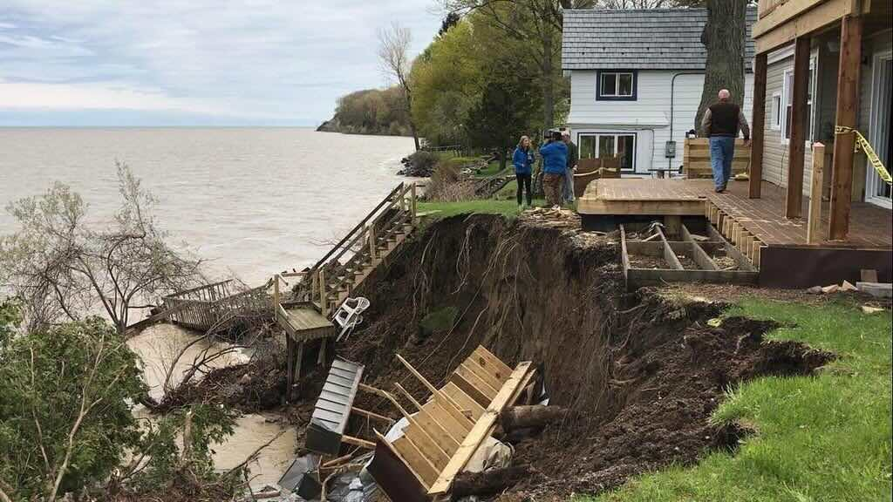

Changing the Shape of Land
What is Erosion?
Erosion is when tiny pieces of the Earth's surface are moved from one place to another. This is usually caused by moving water or wind. Erosion usually happens very slowly, but it can sometimes happen quickly too!
Water is a powerful force that can change the shape of land over time.
Let's Explore How Land Changes!
The Earth is Always Changing
The shape of land is constantly changing. You might not notice because it usually happens very slowly. These changes can take thousands or even millions of years!
The beautiful Vermillion Cliffs were shaped by millions of years of wind and water erosion.
Fun Fact!
Did you know that the Grand Canyon was formed by water erosion? The Colorado River slowly carved through rock over millions of years to create this amazing natural wonder!
Water Erosion: How Water Changes Land
As water flows in rivers, it can carry sand and soil from one place to another. This is called water erosion. Here's how it works:
- Raindrops hit the ground and loosen tiny bits of soil
- Flowing water picks up these soil particles
- The water carries the soil downstream
- Over time, this can create canyons, valleys, and other landforms
Flowing water can carry sand and soil particles away, moving them downstream.
Example: When you pour water on a sand castle, notice how the water carries away the sand particles. This is water erosion in action!
Wind Erosion: How Wind Changes Land
Wind is just moving air. It can blow sand and soil from one place to another. This is called wind erosion. Wind can move tiny pieces of the Earth's surface very far and very fast!
- Wind picks up loose soil and sand particles
- It carries these particles through the air
- The particles are dropped in new locations
- Over time, this can form sand dunes or wear down rocks
Sand dunes are created when wind picks up sand particles and deposits them in a new location.
Think About It!
Have you ever been to the beach and felt sand blowing against your legs? That's wind erosion happening right in front of you!
Ocean Waves: Changing the Coast
Ocean waves are created when wind blows across water. Waves can cause erosion at the coast by:
- Hitting the shore and moving sand away
- Breaking down rocks into smaller pieces
- Carrying beach sand out to sea
Over time, waves can completely change how a beach looks, or even make a beach disappear!

Shoreline erosion can damage property near water as the land beneath is washed away.
Erosion Can Happen Quickly or Slowly
Most erosion happens very slowly over a long time. The Grand Canyon took millions of years to form! But erosion can also happen quickly during:
- Floods
- Storms with heavy rain
- Hurricanes with strong waves
- Strong windstorms
The Grand Canyon was formed by the Colorado River over millions of years through water erosion.
The Power of Erosion
Erosion can cause major damage! If the land beneath a house is moved away because of erosion, the house can fall down. If sand on the coast is moved away by ocean waves, the beach will be gone.
This house is in danger because erosion has worn away the cliff beneath it.
Stopping Erosion: How Can We Help?
Plants Help Stop Erosion
Plants are amazing erosion fighters! Here's how they help:
- Roots: Plant roots hold soil in place like a net
- Leaves and stems: They slow down raindrops before they hit the soil
- Trees: They block the wind, reducing wind erosion
- Grass: Creates a thick mat that protects soil
Try This!
Compare two small trays of soil - one with grass growing and one with bare soil. Pour the same amount of water on each. Which one loses more soil? The grass helps prevent erosion!
Barriers to Stop Water Erosion
People can build different kinds of barriers to stop water from carrying away soil:
- Retaining walls: Hold back soil on slopes
- Riprap: Large stones placed along riverbanks or coastlines
- Dikes and levees: Walls built to keep water from flooding and causing erosion
- Gabions: Wire cages filled with rocks that protect riverbanks
Other Ways to Prevent Erosion
Here are more methods people use to stop erosion:
- Mulch: Placing wood chips, straw, or leaves on top of soil
- Stone cover: Adding a layer of stones to protect soil
- Windbreaks: Rows of trees or fences to slow down wind
- Terracing: Creating flat areas on hillsides
- Seawalls: Walls built along the coast to protect from waves
- Sand dunes: Building up sand hills along beaches
Interesting Fact!
Farmers often plant their crops in rows that go across slopes instead of up and down. This helps slow down water and reduces erosion. This method is called "contour plowing."
Combining Methods for Better Protection
Using just one method to prevent erosion is good, but combining different methods works even better! For example:
- Planting trees AND adding stone barriers on a hillside
- Using mulch AND planting grass to protect soil
- Building a seawall AND planting dune grasses at a beach
Science Challenge!
Different places need different erosion solutions. Think about:
- What would work best on a steep hill?
- What would protect a riverbank during floods?
- What would be best for protecting a sandy beach?
Important Words to Know
- Erosion: Moving pieces of the Earth's surface from one place to another
- Rainfall: Water that falls down from clouds
- River: A flowing stream of water that moves from one place to another
- Wind: What happens when the air around us moves from place to place
- Coast: The area where land meets the ocean
- Waves: When wind blows across water and makes the water move up and down
Erosion Detective Activity
Next time you're outside, look for signs of erosion:
- Gullies or small channels in soil after rain
- Bare tree roots exposed by erosion
- Piles of soil or sand that have been moved by wind or water
- Smooth, rounded rocks in a stream (water erosion made them smooth!)
Remember These Important Facts!
- Erosion happens when wind or water moves pieces of Earth's surface
- Wind erosion moves sand and soil through the air
- Water erosion carries soil and sand downstream in rivers
- Ocean waves can erode beaches and coastlines
- Erosion usually happens slowly but can be fast during floods
- Plant roots help hold soil in place and prevent erosion
- Trees can slow down wind and reduce wind erosion
- Humans can use many methods to prevent erosion
- Combining different methods works best for stopping erosion
- The Grand Canyon was formed by water erosion over millions of years
Science Superpower!
Now that you understand erosion and how to prevent it, you can help protect our Earth from losing its valuable soil!